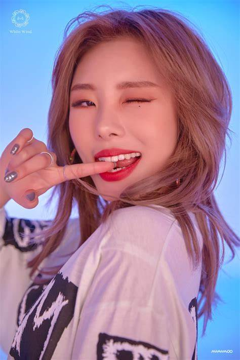

Jung Whee-in (born April 17, 1995),known professionally as Wheein, is a South Korean singer and songwriter signed under RBW Entertainment.

She is best known as the lead vocalist of South Korean girl group Mamamoo.
In April 2018, Wheein made her debut as a solo artist with her digital single "Easy"